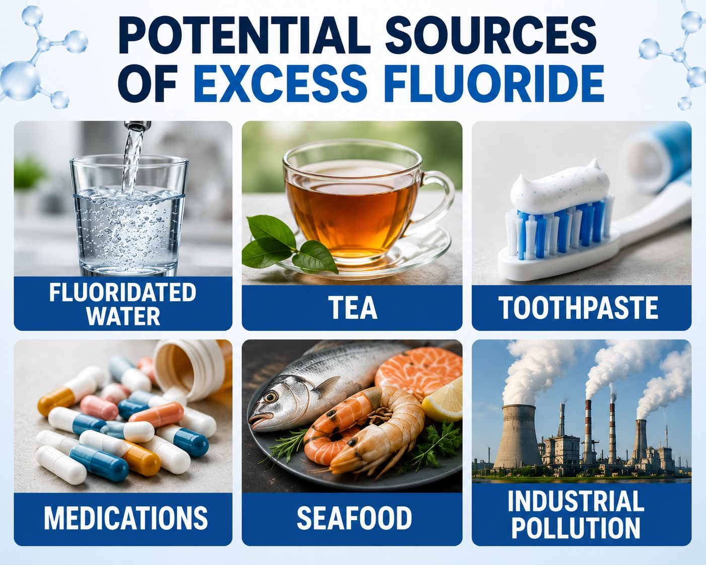
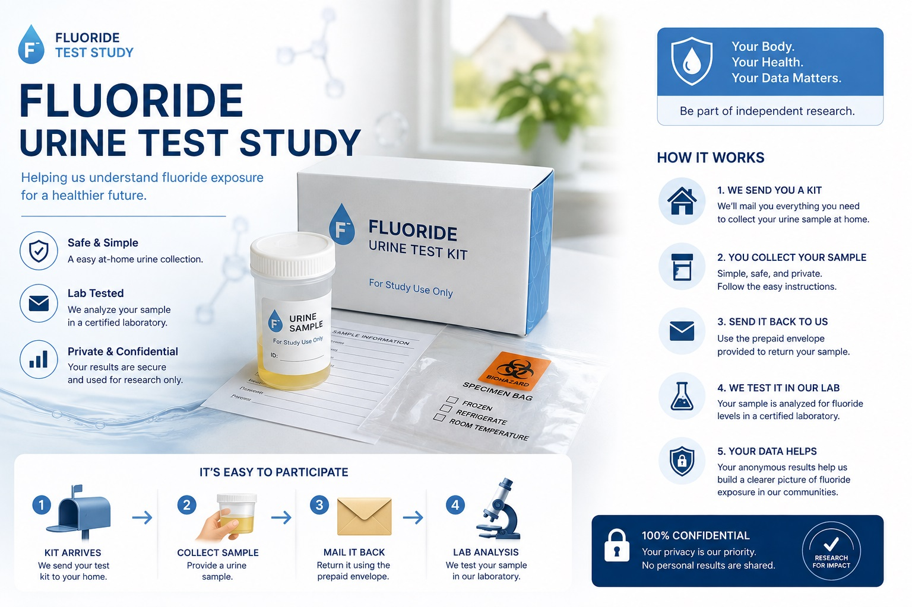

Fluoride Study UK is a 60-day research study measuring your personal fluoride exposure through simple, at-home urine testing. No clinics, no travel — just two test kits posted straight to your door, wherever you are in the UK.
Fluoride is a naturally occurring mineral ion. In parts of the UK it's added to the water supply to help protect teeth, and it's also present in toothpaste, mouthwash, tea, and a range of everyday foods and drinks. Because it comes from so many different sources at once, most people have very little idea of their own personal fluoride exposure — which is exactly what this study sets out to measure.

Some UK water supply areas add fluoride to help reduce tooth decay; levels vary by region.
Tea plants naturally absorb fluoride from soil, making tea — especially black tea — a notable daily source.
Toothpaste, mouthwash, and professional treatments like fluoride varnish all contribute to intake.
Products made using fluoridated water — including some drinks and processed foods — carry it through.
Some private wells and natural groundwater sources contain fluoride at naturally occurring levels.
Certain work environments involve additional fluoride exposure beyond everyday dietary sources.
We measure your personal fluoride level twice — once at the start of the study (Day 0) and once at the end (Day 60) — so you can see exactly how your levels change over the study period. Everything happens by post: no appointments, no clinic visits, and no need to travel anywhere.

One at Day 0 (baseline) and one at Day 60, so your results can be compared side by side.
Kits are posted directly to your home, anywhere in the UK — you don't need to be local.
Clear, step-by-step instructions included — no clinical training or experience needed.
Simply post your sample back to the laboratory using the packaging provided.
Once both samples are analysed, you'll receive a report comparing your Day 0 and Day 60 levels.
Your (anonymised) data contributes to a wider picture of fluoride exposure across the UK.
During the 60-day study period, participants take MasterPeace — a natural mineral supplement developed by Human Consciousness Support. It's non-pharmaceutical and has been studied in multiple peer-reviewed clinical trials.
By Human Consciousness Support (HCS) · masterpeacebyhcs.com ↗
MasterPeace combines pharmaceutical-grade clinoptilolite zeolite with marine plasma minerals. Zeolite is a naturally occurring volcanic mineral with a cage-like crystalline structure that has been studied for its role in binding and supporting the elimination of environmental compounds from the body.
It's taken as a daily liquid supplement and is well tolerated. It's not a drug, requires no prescription, and has no known contraindications for healthy adults.
Published peer-reviewed research
Pilot Clinical Study — Intracellular Electrical Capacity (2023) ↗ Blinded, Placebo-Controlled Detoxification Trial (2024) ↗ Aluminium Reduction Study — Multi-Method Testing (2025) ↗ View all MasterPeace research →A straightforward, entirely postal process from application to results — wherever you're based in the UK.
Complete the short application form below. A member of the research team will contact you within a few working days to confirm your place and answer any questions.
We post your first urine test kit to your home, along with your supply of MasterPeace and clear instructions. Collect your baseline sample and post it back using the pre-paid packaging.
Take MasterPeace each day as directed, while continuing your normal routine. It's a natural, non-pharmaceutical liquid supplement with no known contraindications for healthy adults.
We send your second urine test kit. Collect your sample the same way and post it back to the laboratory for analysis.
Once both samples have been analysed, you'll receive a personal report comparing your Day 0 and Day 60 fluoride levels.
Ready to take part? It only takes about 2 minutes to apply.
Apply to take part →This study is open UK-wide — you don't need to live near any particular town or venue to take part.
This study is directed by an experienced research naturopath with a track record of published, peer-reviewed human clinical studies.
Caroline is a research-led naturopath, microscopist, published author and speaker with over 25 years of clinical and investigative experience. She has directed multiple peer-reviewed human clinical studies examining toxic burden, detoxification responses, and bioelectromagnetic exposure, and she oversees all study design, methodology, and outcome documentation for this research.
carolinemansfield.com ↗Open to adults anywhere in the UK. It takes about two minutes — a member of the research team will be in touch within a few working days.
Send us a message and we'll get back to you — or reach us directly by phone, WhatsApp, or email.